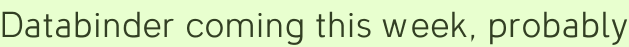

Databinder coming this week, probably
The project I sheepishly mentioned in my last post is Databinder, “a simple bridge from Wicket to Hibernate,” and I’m happy to say I think I can release version .1 of it this week.
I’ve spent about as much time on its documentation, packaging, Web site, and example application as I have on the library itself, but since Databinder is a library for Wicket beginners that’s probably appropriate. (Heaven knows Wicket itself needs more time time spent in those areas.)
There’s a password on its Web site, I’ll drop a note here when it’s really open.
Project plan
- Release version .1 with Maven 2
- Sheepishly annouce project on Wicket listserve
- Make appropriate suggested changes for release .2
- Code a simpler example than Phone directory
- Record how easy it is to code that example from scratch
- ?
Update
The site is open, but the Databinder libraries haven’t been uploaded to ibiblio yet.
Update 2
Okay, we’re on ibiblio. Knock yourselves out!
Add a comment